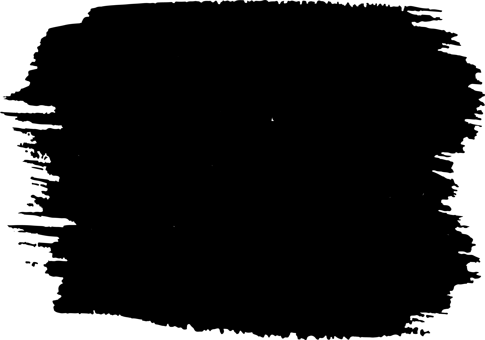

Top 22% + Bottom 20% — just the rough edge

Top 28% + Bottom 24%
Mask (rough sides) + small multiply strokes
Live tuner — drag sliders
Top height:
26%
Bottom height:
22%
Top offset:
-4%
Bottom offset:
-4%
Log values →